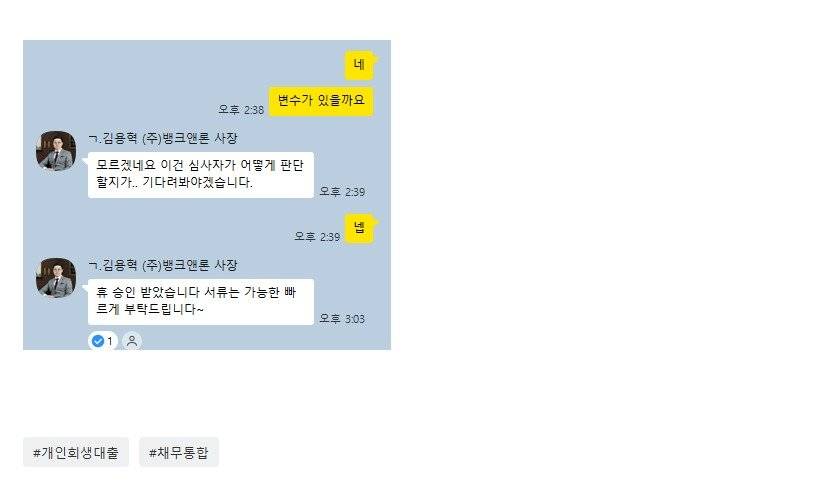

[개인회생자대출] 기대출과다5건 보유중 4000만 승인후기!! / 김용혁 사장님, 이현섭 과장님 너무 감사합니다. 따봉!
대출을 여기저기 나누어 받다 보니 어느새 총 4천만 원이라는 금액이 쌓여 있었습니다. 5개 업체로 분산되어 있다 보니 이자가 어떻게 빠져나가는지도 제대로 파악하기 힘들었고, 현재 개인회생 중이다 보니 20%대 대부업 대출밖에 선택지가 없는 상황이라 고민이 컸습니다.
당장이라도 통합만 된다면 좋겠다는 마음으로 지난달 가조회를 했지만 부결이 나와서 포기하고 있었습니다.
그러던 중 김용혁 사장님께 상담을 부탁드리게 되었고, 솔직히 큰 기대를 하지 않았습니다.
그런데 어떻게 진행하셨는지, 두 개의 대출로 총 4,000만 원 대환이 성공적으로 나왔습니다.
게다가 약간의 차액도 발생해 당장의 여유자금까지 마련할 수 있었습니다.
정말 숨이 트이는 느낌이었고, 이렇게 해결될 줄 몰랐기에 더욱 감사한 마음입니다.
다시 한 번, 어려운 상황에서 큰 도움을 주신 김용혁 사장님께 진심으로 감사드립니다.
끝까지 도와주신 사장님 잘 상환하고 다음에도 또 찾아뵙겟습니다!

https://cafe.naver.com/cityman88/309474